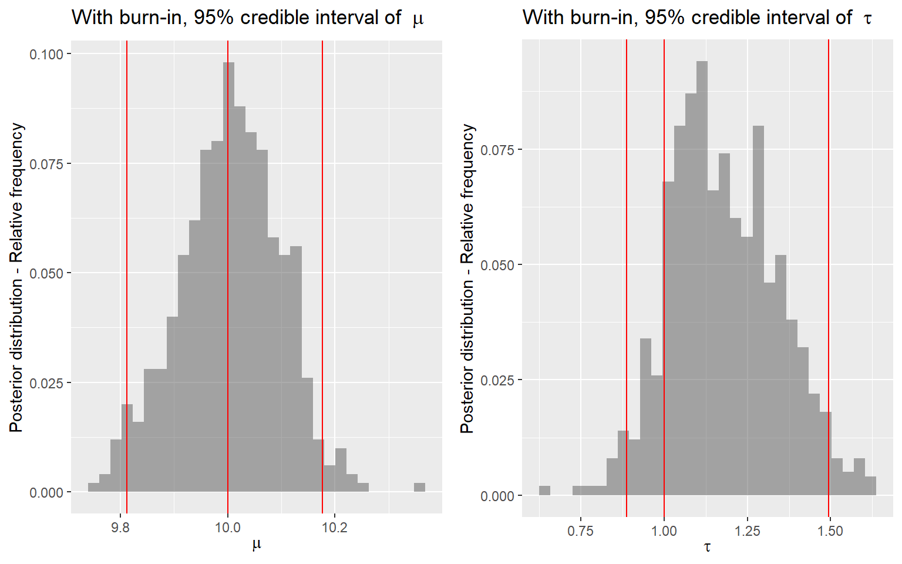

Session 5 Bayesian estimation with MCMC
- Introduction to MCMC and two common MCMC algorithm
- MCMC in action with brms on Bayesian modelling
- Learn about Markov chain diagnostics
5.1 Introduction to Markov Chain Monte Carlo Methods
Oftentimes, the posterior distribution might not be easily determined (as in the case of conjugate models), especially when we are modelling multiple parameters
We need numerical ways to compute posterior distribution
Recall the posterior distribution takes form
\[P(\theta \mid y) = \frac{P(y \mid \theta) \times P(\theta)}{ P(y)} = \frac{P(y \mid \theta) \ P(\theta)}{ \int P(y \mid \theta) \ P(\theta) \ d\theta}\] - The denominator \(\int P(y \mid \theta) \ P(\theta) \ d\theta\) is the challenging part to be determined numerically.
Markov chain simulation is used when it is not possible or not computationally efficient to sample \(\theta\) directly from \(P(\theta \mid y)\)
instead we sample iteratively to draw from a distribution that becomes closer to \(P(\theta \mid y)\)
Markov Chain simulation methods comprise a class of algorithms for sampling from a (complex) probability distribution and have application outside Bayesian statistics as well, especially in statistical optimization
- Markov chain is named after Russian mathematician Andrey Markov (1856-1922).
- A Markov chain or Markov process is a stochastic model describing a sequence of possible events in which the probability of each event depends only on the state attained in the previous event.
Monte Carlo sampling
- Notation:
- Let \(\theta = (\theta_1, \ldots, \theta_p)\) be the collection of \(p\) number of parameters in a Bayesian model
- Let \(Y = (Y_1, \ldots, Y_n)\) be the observed data of \(n\) subjects
- The posterior \(P(\theta \mid Y)\) is a probability distribution
- If \(\theta^{(1)}, \ldots, \theta^{(s)}\) are \(s\) samples from \(P(\theta \mid Y)\), then the mean of the \(s\) samples approximate the posterior mean!
- This posterior draws provides approximations of the posterior summaries of interest (e.g., posterior mean, posterior medium, P(theta < 0.9), etc)
- How to draw samples from some arbitrary distribution \(P(\theta \mid Y)\)?
- There are many algorithms and software options for performing MC sampling
- Software:
- OpenBUGS, WinBUGS, JAGS;
- STAN;
- INLA (Iteratively Nested Laplace Approximation, this is not MC)
- In this session, we will introduce two MCMC algorithms: Metropolis-Hastings algorithm (HMC) and Gibbs sampler.
- brms package uses stan which samples following Hamiltonian Monte Carlo algorithm and No-U-Turn Sampler (NUTS)
- HMC is a bit more complex, we will not cover the algorithm in this session, for those who are interested see http://www.mcmchandbook.net/HandbookChapter5.pdf and (Hoffman, Gelman, et al. 2014)
- HMC is documented to be more efficient then Gibbs and Metropolis algorithm (less iterations are needed).
- Online interactive MCMC demonstration app, https://chi-feng.github.io/mcmc-demo/
5.1.1 Gibbs sampling
As a simple example, suppose we want to estimate mean \(mu\) and precision \(\tau = 1/\sigma^2\) of a normal distribution. We place the priors \(\mu \sim N(0,1)\) and \(\tau \sim Gamma(1,1)\).
\[ Y \mid \mu, \tau \sim N(\mu, \frac{1}{\tau})\] \[\mu \sim N(0,1)\] \[\tau \sim Gamma(1,1)\]
Then the conditional posterior distributions for \(\mu\) and \(\tau\) are
\[ P( \mu \mid \tau, Y) \propto N(\frac{\tau \sum_{i=1}^n y_i}{1 + n \tau},\frac{1}{1+n\tau})\]
\[ P( \tau \mid \mu, Y) \propto Gamma(1 + \frac{n}{2}, 1+\frac{\sum_{i=1}^n (y_i-\mu)^2}{2})\]
We want to alternate between sampling from these two conditional posteriors.
Let’s simulate \(n=100\) data, \(Y\), from N(10,1). The true data mean \(\mu = 10\) and \(\tau = 1\), our posterior distribution of \(\mu\) and \(\tau\) should approximate the true value
First, let’s complete Gibbs sampling with 10 draws
- we specify an initial value of \((\mu^{(1)}, \tau^{(1)}) = (0,1)\) to start our chain
- Given \(\tau^{(1)} = 1\), plug in this value to \(P( \mu \mid \tau, Y) \propto N(\frac{ \sum_{i=1}^{100} y_i}{1 + 100 },\frac{1}{1+100})\), now we draw 1 sample of \(\mu\), \(\mu^{(2)}\) from P( , Y)
- Given \(\mu^{(1)} = 0\) plug in this value to \(P( \tau \mid \mu, Y) \propto Gamma(1 + \frac{100}{2}, 1+\frac{\sum_{i=1}^{100} (y_i-0)^2}{2})\), now we draw 1 sample of \(\tau\), $ from \(P( \tau \mid \mu, Y)\)
- we repeat sample 2 and 3 and construct a posterior set of \((\mu^{(1)}, \tau^{(1)}, \ldots, (\mu^{(10)}, \tau^{(10)}))\)
set.seed(123)
# Prior distribution for mu and tau;
prior_mean <- 0 # the prior on mu;
prior_precision <- 1 # the prior on mu;
prior_shape <- 1 # alpha in prior for precision;
prior_rate <- 1 # beta in prior for precision;
# data likelihood - simulated from N(10,1)
num_obs <- 100 # size of our data
true_mean <- 10
true_precision <- 1
Y <- rnorm(num_obs, true_mean, 1/sqrt(true_precision))
# number of Gibbs samples of posterior draws;
num_sample <- 10
# posterior sample vector initiated with NULL value;
mu <- rep(NA, num_sample)
tau <- rep(NA, num_sample)
#initialize values on mu and tau
mu[1] <- 0
tau[1] <- 1
for(i in 2:num_sample){
# i %% 2 means for i mod 2 == 0, that is for i with even value;
if(i %% 2){
mu[i] <- rnorm(
1,
mean = (prior_precision * prior_mean + tau[i-1] * sum(Y)) /
(prior_precision + num_obs * tau[i-1]),
sd = sqrt(1 / (prior_precision + num_obs * tau[i-1]))
)
tau[i] <- tau[i-1]
} else{
mu[i] <- mu[i-1]
tau[i] <- rgamma(
1,
shape = prior_shape + num_obs / 2,
rate = prior_rate + sum((Y - mu[i])^2) / 2
)
}
}
posterior <- data.frame(order = 1:num_sample, mu, tau)
ggplot(posterior, aes(x = mu, y = tau, label = order)) +
geom_point() +
geom_text(hjust=0, vjust=0) +
geom_path(aes(x = mu, y = tau), alpha = 0.3) +
ggtitle(paste0('Path plot of Gibbs sampling with ', num_sample, ' draws') )+
xlab(expression(mu)) +
ylab(expression(tau)) +
theme_bw()- Now, let’s complete Gibbs sampling with 2000 draws
- we also consider discarding the first 1000 draws (burn-in) and making posterior inference using only the last 900 draws!

p3 <- ggplot(posterior[(burnin+1):num_sample,]) +
geom_histogram(
aes(x = mu, y = stat(count) / sum(count)),
alpha = 0.5) +
geom_vline(
aes(xintercept = quantile(posterior$mu, 0.025)),
color = 'red') +
geom_vline(
aes(xintercept = 10),
color = 'red') +
geom_vline(
aes(xintercept = quantile(posterior$mu, 0.975)),
color = 'red') +
ylab('Posterior distribution - Relative frequency') +
xlab(expression(mu)) +
ggtitle(bquote('With burn-in, 95% credible interval of ' ~ mu))
p4 <- ggplot(posterior[(burnin+1):num_sample,]) +
geom_histogram(
aes(x = tau, y = stat(count) / sum(count)),
alpha = 0.5) +
geom_vline(
aes(xintercept = quantile(posterior$tau, 0.025)),
color = 'red') +
geom_vline(
aes(xintercept = 1),
color = 'red') +
geom_vline(
aes(xintercept = quantile(posterior$tau, 0.975)),
color = 'red') +
ylab('Posterior distribution - Relative frequency') +
xlab(expression(tau)) +
ggtitle(bquote('With burn-in, 95% credible interval of ' ~ tau))
ggarrange(p3, p4, nrow = 1)
p5 <- ggplot(posterior[(burnin+1):num_sample,]) +
geom_line(
aes(x = order, y = mu)) +
geom_hline(
aes(yintercept = 10),
color = 'red') +
ylab(expression(mu)) +
xlab('posterior draws') +
ggtitle(bquote('Trace plot with burn-in of' ~ mu))
p6 <- ggplot(posterior[(burnin+1):num_sample,]) +
geom_line(
aes(x = order, y = tau)) +
geom_hline(
aes(yintercept = 1),
color = 'red') +
ylab(expression(tau)) +
xlab('posterior draws') +
ggtitle(bquote('Trace plot with burn-in of' ~ tau))
ggarrange(p5, p6, nrow = 2)
Summary
- OpenBUGS, WinBUGS, and JAGS use Gibbs sampling
- Gibbs sampling relies on conditional distributions as proposal distributions to sample each dimension the posterior distributions.
- Gibbs sampling generates a Markov chain of samples, each of which is correlated with nearby samples.
- in the example here, the next draw is sampled from posterior calculated using the previous draw!
- Generally, samples from the beginning of the chain (the burn-in period) may not accurately represent the desired distribution and are usually discarded